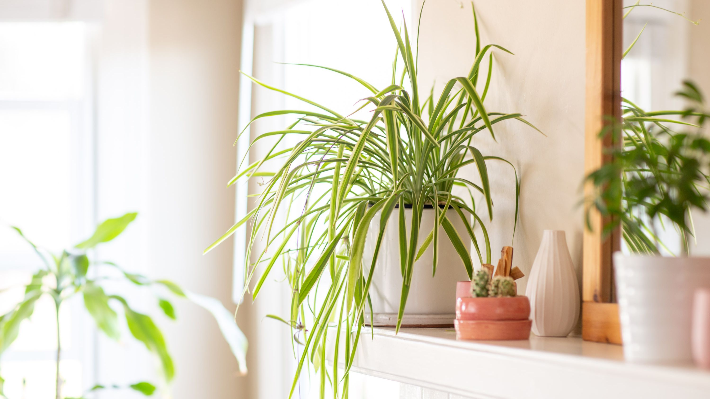
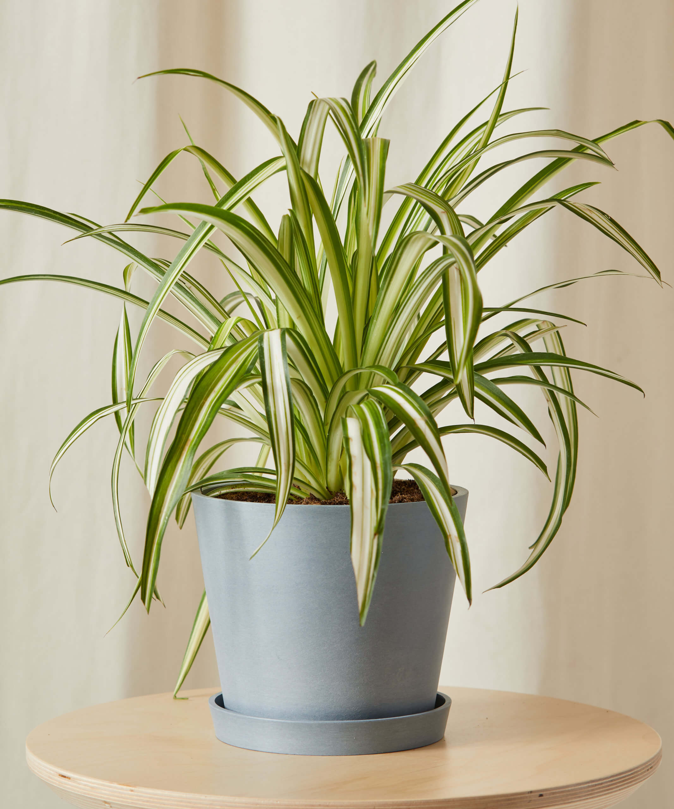
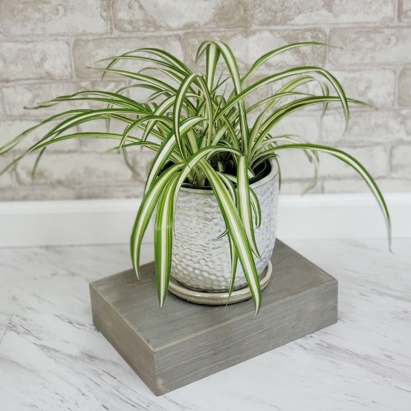

Spider Plant
The spider plant (Chlorophytum comosum) is considered one of the most adaptable of houseplants and the easiest to grow. This plant can grow in a wide range of conditions and suffers from few problems, other than brown tips. The spider plant is so named because of its spider-like plants, or spiderettes, which dangle down from the mother plant like spiders on a web. Available in green or variegated varieties, these spiderettes often start out as small white flowers.
Caring for spider plants is easy. These tough plants tolerate lots of abuse, making them excellent candidates for newbie gardeners or those without a green thumb. Provide them with well-drained soil and bright, indirect light and they will flourish. Water them well but do not allow the plants to become too soggy, which can lead to root rot. In fact, spider plants prefer to dry out some between waterings. When caring for spider plants, also take into account that they enjoy cooler temperatures — around 55 to 65 F. (13-18 C.). Spider plants can also benefit from occasional pruning, cutting them back to the base.



If you begin to notice spider plant leaves browning, there’s no need for worry. Browning of leaf tips is quite normal and will not harm the plant. This is often the result of fluoride found in water, which causes salt buildup in the soil. It usually helps to periodically leach plants by giving them a thorough watering to flush out excess salts. Be sure to allow the water to drain out and repeat as needed. It may also help to use distilled water or even rainwater on plants instead of that from the kitchen or outside spigot.